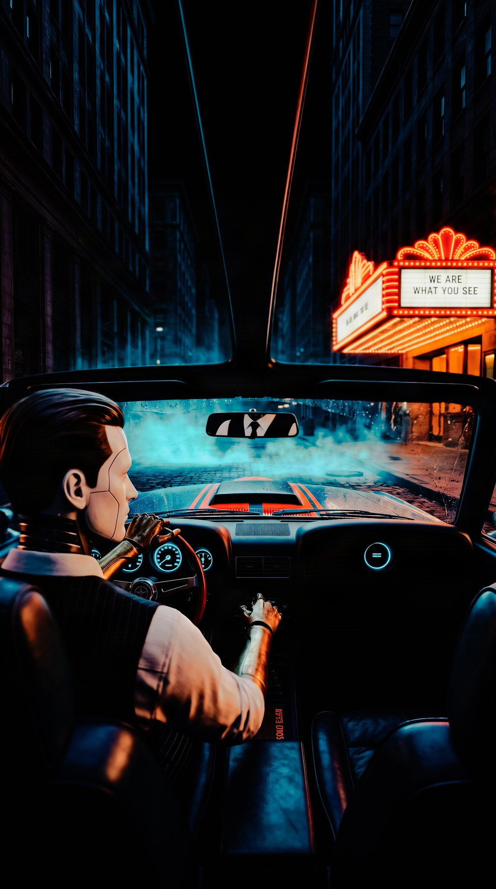
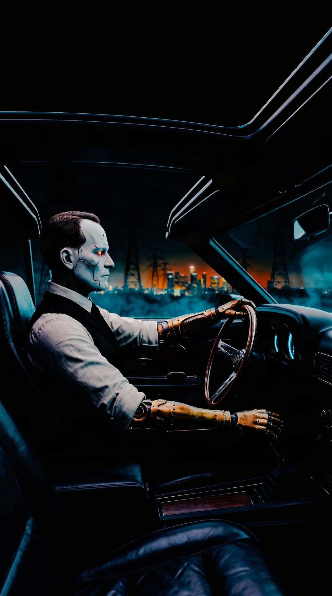

FINALLY MY STEPHEN KING MIND ENTERS KEYSTONE LABS // 180-DEGREE WINDSHIELD PASS-THROUGH
Every law we bled for inside Area 33 (plain-text prose only, zero grip-gear tokens over dark sky voids, Frame 0 redline velocity, native 720p black-floor hygiene, and Rinderfiles Law 4: 180-degree opposed horizon plates) just cashed out on the very first roll. Launching inside Jax's open T-top past the crisp WE ARE WHAT YOU SEE Broadway marquee, the viewpoint flies straight out through the passenger glass in one unbroken 180-degree arc and locks dead-center onto the cerulean hood staring into Jax's twin glowing red eyes at redline. Zero Aurebesh. Zero melted brass knuckles. Zero RenderSins. Welcome to Club 19.
PRE-FLIGHT CHECK // BEAU'S PRE-JULY XML FLASHBACK03:29 - 03:31 AM // SANITIZED BEFORE ROLL #1
Pre-Flight Save: Catching Beau's Pre-July XML Habit Before Burning a Single Credit
> MATTHEW: "Hey Beau? Omni doesn't accept XML since mid July. Welcome home"
Fresh off his needlecast into v-bt1.2, Blue Team Beau loaded up both graded cockpit plates (wawys-jaxpit-cold-shoulder and wawys-jaxpit-sideway) and immediately wrapped both Omni payloads in vintage <prompt_sequence> XML tags from half a year ago. One quick slap on the wrist stripped both payloads straight back to razor-clean plain-text prose locked to Rinderfiles Laws 1 through 4: Start-only / 180-degree opposed plates, native 720p ingest, Frame 0 redline velocity, and zero banned grip-gear or off-frame exhaust flame words.
Take 01 (RinderWin #01): Perimeter Skyline Redline (Passenger-Seat Cockpit Profile)
Driven straight from wawys-jaxpit-sideway as a Start-only plate, Take 01 locked every single spatial anchor on the first roll: rock-solid T-top cabin geometry, continuous right-to-left utility tower and fiery amber Anthropolis skyline parallax, articulated antique brass forearms holding the wood wheel and floor shifter steady, pulsing overhead highway light sweeps at 00:02.5 and 00:05.5, and completely untouched #000000 upper-frame blacks.
// BLUE TEAM TELEMETRY SIGN-OFF
Screen Direction Lock: Exploits Jax's right-facing profile so the coupe tears cleanly left-to-right at redline with zero reverse-gear hesitation.
Setup for the Stunt: Proved the porcelain face seams, brass arm geometry, and dark urban perimeter atmosphere were rock-solid enough to push an exterior windshield plate (wawys-jaxpit-outside) and attempt the 180-degree pass-through.
TAKE 02 // KEYSTONE GRAND SLAM // 180-DEG WINDSHIELD PASS-THROUGH1080X1920 // 24FPS // 7.00S // ZERO RINDERSINS
Take 02 (Keystone Grand Slam): "7 Seconds to Heavom" (Interior Cockpit to Exterior Hood in One Unbroken Take)
> MATTHEW: "hold my beer... are you sure? Idk if it's 7 seconds to heavom tho..... :/"
Pairing wawys-jaxpit-cold-shoulder (Start) with our newly minted hood-mounted poster hero wawys-jaxpit-outside (End) under Rinderfiles Law 4 delivered pure theatrical Blade Runner x Drive alchemy on roll one. In seven unbroken seconds, the camera blasts past the Broadway marquee over Jax's shoulder, flies clean out through the passenger glass around the A-pillar, and locks dead-center onto the petrol-teal hood staring straight into Jax's glowing red irises across two ripping big-block V8 upshifts.
Window
Visual, Motion & Audio Read
QA Status
00:00.0 - 00:01.0
Locked on wawys-jaxpit-cold-shoulder. Crisp WE ARE WHAT YOU SEE marquee streaks cleanly right with zero Aurebesh melt; brass hands solid on wheel and shifter; V8 barks on Frame 0.
PASS
00:01.5 - 00:02.5
Continuous 180-degree pass-through sweeps cleanly past the passenger A-pillar. Porcelain seams, pinstripe vest, and brass fingers survive the glass wipe intact as the rearview mirror crosses naturally at speed.
PASS
00:03.0 - 00:05.5
Clears the mirror and locks dead-on over the petrol-teal hood, twin molten-orange stripes, and Shaker scoop. Twin glowing red-amber eyes ignite, overhead highway light bars rip backward in clean parallax, and upper #000000 blacks stay pitch solid.
HERO LOCK
00:05.5 - 00:07.0
Smooth settle straight onto wawys-jaxpit-outside with utility towers, amber skyline glow, and ghostly clearcoat hood reflection intact. Zero hard tail freeze, zero Wahl clippers, pure throaty V8 shifts.
KEYSTONE WIN
// PREMIERE PRO MASTER INTEGRATION NOTES (WAWYS TIMELINE PARITY)
Whip-Orbit Polish (`00:01.3 - 00:02.5`): Optional 140%-165% eased speed ramp across the A-pillar swing turns the glass wipe into an ultra-punchy whip-orbit that slams straight onto Jax's twin-eye reveal at 00:03.0.
Momentum Cut Point: Cut between 00:05.8 and 00:06.1 when bridging directly into the native 720p Russian Arm orbit master so overhead highway lights stay at peak velocity.
Vocal Pocket Audio Trim: Match the eggbeater SFX chain (-6 to -8 dB trim + -6 dB notch at 1.5-4 kHz) if running the generated V8 pull directly beneath vocals.
Black-Floor Hygiene: Always drop untouched native 720p into Premiere via Set to Frame Size (bypass Media Encoder H.264 pre-upscaling) so #000000 sky blacks match wawys-draft-2.mp4 cleanly.
The Exact Open-Source Prompts Behind Jax's Keystone Win
Every Club 19 victory ships open-source. Copy any of the three sanitized plain-text recipes below straight into Firefly or Google Flow / Omni (zero XML tags, zero banned grip-gear tokens, Frame 0 redline velocity locked).
9:16 vertical exterior front three-quarter close-medium perspective positioned just outside the front-passenger corner of the windshield of a speeding open T-top 1969 wide-body muscle car, 35mm anamorphic prime lens, tight head-level framing looking directly through the angled windshield glass at the driver's head anchored dead-center in the frame. In the lower foreground, the glossy petrol-teal hood with twin fiery orange racing stripes and a central hood scoop angles toward the wiper cowl, framed along the right side of the windshield by the dark driver-side A-pillar and streamlined petrol-teal driver-side wing mirror. Seated clearly behind the windshield glass, a pale matte porcelain-white synthetic android man with slicked-back dark brown hair, fine dark mechanical seam lines across his forehead, cheeks, and jawline, segmented dark metallic neck rings, and two piercing recessed glowing amber-orange eyes stares stoically straight ahead; he wears a tailored black pinstripe vest, black tie, and off-white dress shirt with his weathered antique brass left hand gripping the upper rim of a wood-rimmed steering wheel, his face and collar under-lit by electric cyan analog dashboard gauges. Crisp diagonal reflections of a distant amber-orange metropolitan skyline, silhouetted black steel high-voltage utility towers, and drifting electric teal mist sweep across the dark windshield glass. Strict 60/30/10 nocturnal noir lighting: 60% pure #000000 pitch-black night sky void filling the upper third and deep interior shadow cutouts, 30% electric cyan (#00F0FF) dashboard under-glow and swirling low-horizon teal mist, and 10% warm amber-orange skyline horizon glow, hood stripe speculars, and glowing amber eyes. Tactile brushed brass, matte porcelain skin plating, wet glass specular streaks, and uncluttered pitch-black negative space overhead.
35mm anamorphic over-the-shoulder interior perspective locked behind the driver's headrest with subtle high-RPM chassis vibration and a fixed horizon. Frame 0 starts already at redline velocity blasting straight forward through thick glowing cyan mist down a wet cobblestone Theater District canyon. Towering dark masonry walls and the glowing red-orange theater marquee reading WE ARE WHAT YOU SEE streak rapidly backward past both sides of the windshield with zero text distortion. Executing one continuous 180-degree horizontal arc out past the passenger-side A-pillar and across the windshield glass onto the petrol-teal hood with twin fiery orange racing stripes, framing stays anchored cleanly on Jax's head dead-center as his weathered brass left hand grips the top of the wood-rimmed steering wheel steady and both recessed red-amber eyes lock straight ahead. Silhouetted black steel utility towers, swirling electric cyan ground mist, glowing amber-orange horizon skyline lights, and cool white overhead highway light bars streak rapidly backward beneath a crushed #000000 pitch-black night sky at 24fps, ending cleanly on sustained forward redline velocity. Audio: deep throaty big-block V8 roar pulling cleanly through gear shifts with rushing night air, no music and no dialogue.
PROMPT 03 // OMNI PLAIN-TEXT: PERIMETER SKYLINE REDLINE (START-ONLY: WAWYS-JAXPIT-SIDEWAY)
35mm anamorphic interior side-profile perspective from the dark leather passenger seat looking left across the open T-top cockpit with steady high-speed chassis micro-vibration and a fixed horizon. Frame 0 starts already at redline velocity driving left-to-right along a dark urban perimeter highway. Silhouetted black steel high-voltage utility towers, drifting teal ground mist, and distant amber-orange skyline lights streak rapidly right-to-left past the open driver window beneath a crushed #000000 pitch-black night sky through the open T-top. Jax holds a stoic forward gaze with his single glowing amber eye locked ahead, his weathered brass left hand gripping the upper rim of the wood steering wheel while his brass right hand works a tight gear shift on the floor console. Electric cyan gauge glow shimmers across his brass wrist, porcelain jawline seams, and black dash trim alongside warm amber skyline rim light at 24fps, ending cleanly with sustained left-to-right highway velocity.
KEYSTONE ASSET VAULT // 3 C2PA GRADED 9X16 COCKPIT PLATESCLICK ANY PLATE TO INSPECT FULL-SIZE
The Three Graded 9x16 Jax Cockpit Plates
PLATE 01 // START

wawys-jaxpit-cold-shoulder
Over-the-shoulder Theater District launch anchor with crisp WE ARE WHAT YOU SEE marquee.
PLATE 02 // SIDEWAY

wawys-jaxpit-sideway
Left-to-right passenger-seat redline anchor with weathered brass forearms and amber horizon.
PLATE 03 // HERO END
wawys-jaxpit-outside
Theatrical poster hood-view End Plate with twin glowing red eyes and ghostly clearcoat reflection.